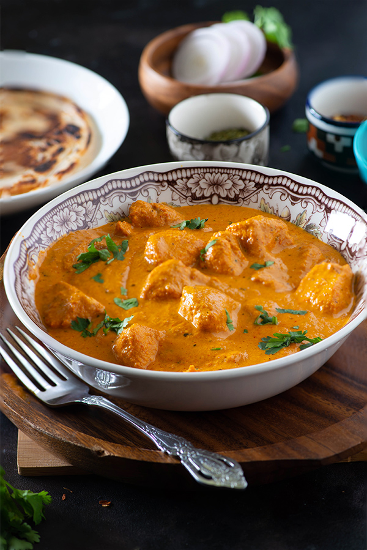

Welcome to our Website of Food Recipes you can find the Top 5 Recipes below
Recipe No-1: Butter Chicken


Ingredients:
For the chicken and marinade
- 1 pound boneless, skinless chicken thighs, cut into roughly 1-inch cubes
- 1/4 cup full-fat plain yogurt
- 1 tablespoon olive oil
- 1 tablespoon ginger garlic paste
- 1 teaspoon ground coriander seed
- 1 teaspoon Kashmiri Lal Mirch
- 1 teaspoon cumin
- Salt, to taste
For the sauce
- 8 to 10 whole almonds
- 8 to 10 whole cashews
- 12 tablespoons unsalted butter, divided
- 1 tablespoon ginger garlic paste
- 1 teaspoon sugar
- 1 (15-ounce) can diced tomatoes
- 2 tablespoons dried coriander seed
- 1 1/2 teaspoons ground garam masala
- 1/2 teaspoon ground Kashmiri Lal Mirch
- 1/2 teaspoon salt
- 1 cup water
- 1/4 cup heavy cream
- 1/2 tablespoon Kasuri Methi
Instructions:
- Marinate the chicken:
- Bring the chicken and the rest of the marinade ingredients together in a large bowl. Using your hands, massage the marinade into the chicken.
Cover with plastic wrap and refrigerate for at least 1 hour, or up to overnight.
- Soak cashews and almonds:
- Soak cashews and almonds in water for at least an hour to (or up to overnight) before preparing the rest of the recipe.
- Cook the chicken:
- Heat a skillet or grill pan over medium-high heat. Drizzle a teaspoon of oil to the pan.
Working in batches, remove chicken from the marinade and grill them on the pan for 3 to 5 minutes on each side,
until the chicken is cooked through (clear juice runs out of it when you cut into it). Do not crowd the pan.
Once cooked, transfer the chicken into a separate dish. Cover and set aside for later.
- Start making the sauce:
- Melt 1 1/2 tablespoons of the butter in a medium sized Dutch oven or a skillet on medium low heat. As soon as the butter melts,
add the ginger garlic paste followed by sugar. Sauté for 1 to 2 minutes.
Stir in the tomato and cook for 8 to 10 minutes on medium high heat, until all the extra liquid is cooked off.
The sauce should be a loose, paste-like consistency.
Add coriander, garam masala, Kashmiri Lal Mirch, and salt. Stir and cook on medium heat for 2 to 3 minutes.Turn off the heat.
- Purée the sauce with the nuts:
- Transfer the paste to a blender or the bowl of a food processor. Add the soaked,drained cashews and almonds.Blend into a smooth paste.
- Finish the dish:
- Return the paste to the cooking pan over medium heat. Add the water to the paste and stir to make a smooth sauce.
As the sauce begins to boil, add the grilled chicken and heavy cream. Stir well. Cover the pan and simmer for 5 minutes.
- Rest the butter chicken:
- Turn off the heat and uncover the pan. Stir in the remaining 1/2 tablespoon butter and the kasuri methi. Cover again,
and let the dish rest for 8 to 10 minutes so the flavor of kasuri methi can marry into the butter chicken.
- Serve:
- Serve the butter chicken with a side of steamed basmati rice, roti, or naan. Leftovers will keep refrigerated, covered, for up to 5 days.
You can freeze this dish in an airtight covered container or a zip-top bag for a month.
Thaw and reheat in a saucepan over medium-low heat to retain the texture.
Recipe No-2: Creamy One Pot Pasta with Zucchini

Ingredients:
- 1/4 cup olive oil
- 4 large or 5 medium zucchini (2 pounds), coarsely grated
- 2 1/2 teaspoons kosher salt, divided, plus more to taste
- 1/2 teaspoon freshly ground black pepper, plus more to taste
- 3 1/4 cups water
- 1 pound dry rigatoni or penne pasta
- 6 ounces cream cheese, softened
- 1 lemon, zested and juiced (about 2 tablespoons juice)
- 1/4 cup chopped toasted walnuts
Instructions:
- Cook the zucchini:
- Heat the oil in a large heavy-bottomed pot or Dutch oven over medium-high heat. Add the zucchini and season with 1 teaspoon salt
and 1/2 teaspoon black pepper. Cook the zucchini, stirring occasionally, until it expels liquid, the liquid cooks off, and the
zucchini caramelizes into a jam-like, spreadable consistency, 10 to 12 minutes.
If you start to notice any browning at the bottom of your pot, reduce the heat to medium. Once jammy, transfer the zucchini into a
medium bowl and set it aside.
- Cook the pasta:
- In the same pot (don’t worry about wiping off any browned bits or pieces of zucchini that might be left in the pot), add 3 1/4 cups water
and bring it to a boil over high heat. Season the water with the remaining 1 1/2 teaspoons salt.
Once water is boiling, add the pasta and cream cheese, and reduce the heat to medium-high. Break up the cream cheese with the back of
a wooden spoon to disperse throughout. It’s okay if the pasta isn’t completely submerged in liquid. Cook, stirring frequently until the
pasta is al dente and liquid is reduced and creamy, 11 to 13 minutes. If all the moisture cooks off and the pasta is still undercooked,
add a splash of water.
- Add the zucchini back in:
- Add the cooked zucchini, lemon zest, and lemon juice and cook until warmed through, 2 minutes. Add a splash of water to create a thin,
glossy sauce, if needed. Season to taste with salt and pepper, if needed. Divide between bowls and top with toasted walnuts. Serve.
Though it’s best enjoyed immediately, you can always refrigerate leftovers in an airtight container for up to 3 days and reheat it in
the microwave or in a saucepan with a splash of water
Recipe No-3: Indian Bhajias (Pakoras)

Ingredients:
For the Batter:
- 1 cup Bengal gram flour
- 1/2 teaspoon red chili powder
- 1 pinch asafoetida
- 1 teaspoon thymol seeds, or carom seeds
- Salt, to taste
For the Vegetables:
- 1 head cauliflower
- 1 medium red onion
- 1 medium potato
- 1 cup spinach
- S6 to 8 ounces paneer
For Frying:
- 2 to 3 cups vegetable oil, such as canola or sunflower oil
Steps to Make It:
- Gather the ingredients.
- Mix the gram flour and all the spices with a little water at a time in a bowl, to make a thick batter, slightly thicker than
pancake batter. Add salt to taste.
- If using cauliflower, separate the florets into bite-sized pieces. The potatoes and onions should be thinly sliced.
Trim the stems off of the spinach leaves. Cube the paneer into 1-inch cubes.
- Preheat oil and reduce the flame to medium. This will allow the bhajias to cook well both on the outside and inside.
- Coat the vegetables well with batter, and then deep-fry till golden.
- Drain on paper towels and serve with tamarind chutney or tomato ketchup.
Recipe No-4: Gulab Jamun


Ingredients:
- 6 cups water
- 3 cups granulated sugar
- 1 tablespoon ground cardamom
- 2 tablespoons rose water
- 3 cups powdered milk
- 1 1/2 cups all-purpose flour
- 1 1/2 teaspoons baking powder
- 1 cup heavy cream, or double cream, thickened
- Vegetable, canola, or sunflower oil, for frying
Steps to Make It:
- Gather the ingredients.
- Add the water and sugar to a large saucepan. Bring to a boil over high heat, stirring occasionally until the sugar dissolves.
- Turn off the heat and stir in the ground cardamom and rose water. Set the syrup aside.
- In a large bowl, combine the powdered milk, flour, and baking powder.
- Add the heavy cream a little at a time while kneading to make a dough that is medium-soft but not sticky.
You may not use all the cream. Use just enough to reach the desired consistency; the smoother it is, the better,
and the less likely that the dough will become hard when it's fried.
- Lightly oil the palms of your hands.
- Once the dough is ready, divide it into walnut-sized balls, rolling it between your palms until nice and smooth.
- Meanwhile, fill a wide pan with enough oil to deep fry the doughnuts. Heat the oil medium heat to between 350 F and 360 F.
- Carefully add the gulab jamun and fry, in batches if necessary to not crowd the pan, turning often to brown all sides.
- Once cooked, remove the doughnuts with a slotted spoon, allowing the oil to drain.
- Transfer immediately into the rose syrup.
- Repeat this until all the dumplings are cooked and in the syrup. Allow the gulab jamun to soak in the syrup for at
least 2 hours before serving.
Recipe No-5: Samosa Recipe

Ingredients:
For the Filling:
- 1 teaspoon vegetable oil
- 1 teaspoon minced fresh ginge
- 1 teaspoon cumin seeds
- 1 teaspoon minced fresh garlic
- 1 teaspoon ground turmeric
- 1 teaspoon cayenne pepper
- 1 teaspoon garam masala
- 1 teaspoon chaat masala
- 1 1/2 cups boiled and mashed potatoes, Idaho Russet or Yukon Gold
- 1/2 cup petite peas, blanched
- 1 tablespoon fresh-squeezed lemon juice
- 1 teaspoon granulated sugar
- Kosher salt, to taste
- Vegetable oil, for frying
For Assembling the Samosas:
- 24 wonton wrappers (homemade or store-bought)
- 4 tablespoons water, for sealing
Steps to Make It:
Make the Filling:
- Gather the ingredients.
- Heat the oil in a large saucepan over medium-high heat.
- When the oil is hot but not smoking, add cumin seeds and let them sizzle and season the oil for a minute or two.
- Add the minced ginger and garlic and allow everything to cook for 30 seconds. Reduce the heat for the next step.
- Add the dry spices spices: turmeric, cayenne pepper, garam masala, and chaat masala. Mix in quickly.
- Add the mashed potatoes and blanched peas and mix vigorously to ensure the spices are well distributed.
Allow this to cook over low heat for a minute.
- Make a small well in the center of the potato mixture and add the lemon juice, sugar, and salt to taste. Mix well.
- Remove filling from heat and pour in a bowl. Allow to cool completely before using.
Assemble the Samosas:
- Work with one wrapper at a time. Line the outer edge of the wonton wrapper with a little water.
- Scoop out about a tablespoon of the filling and place it in one corner of the wrapper, away from the center.
- Fold the opposite corner of the wrapper over it, and pinch the two edges together to create a seal.
The finished samosa will look like a triangle.
Cook the Samosas:
- Heat 2 inches of cooking oil in a heavy-bottomed saucepan. The oil should go no more than halfway up the side of the pan,
and the pan must be wide enough to hold at least two samosas side by side. Line a plate with a couple layers of paper towels.
Test the oil with a piece of an empty wonton wrapper. If it sinks and then quickly floats, the oil is hot enough.
- Slide in one or two samosas. Do not crowd them—they should have room to float on their own, and there should be enough
space to flip each of them.
- Fry until the samosas are golden on either side. This will take a minute or two for each side. Carefully remove from oil
with a slotted spoon or spider and place on paper towels to drain. Allow to cool before eating.